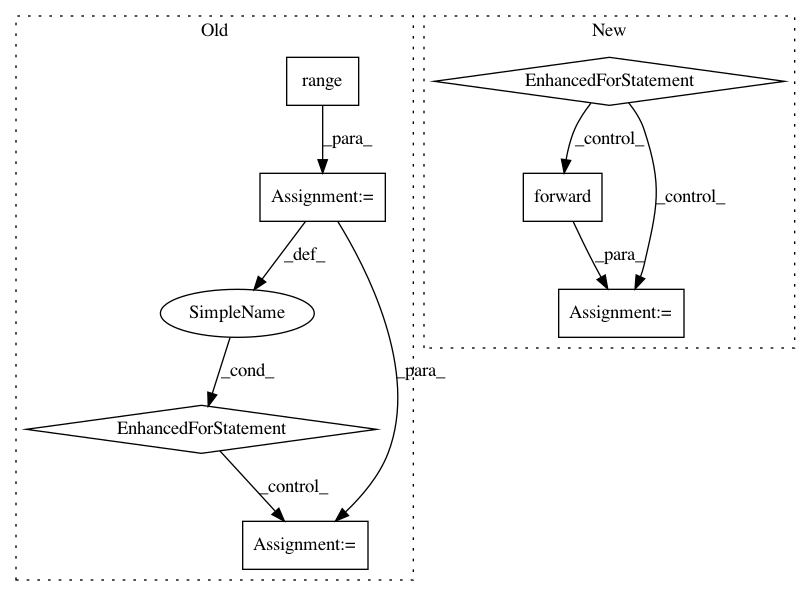

c9b787a1fa1757e692db3f5eaff30a372b0c9332,gpytorch/kernels/lcm_kernel.py,LCMKernel,forward,#LCMKernel#Any#Any#,38
Before Change
Args:
covar_x = self.covar_module_list[0](x1, x2)
for i in range(1, self.lcm_size):
covar_x += self.covar_module_list[i](x1, x2)
return covar_x
After Change
Args:
res = self.covar_module_list[0].forward(x1, x2)
for m in self.covar_module_list[1:]:
res += m.forward(x1, x2)
return res
In pattern: SUPERPATTERN
Frequency: 4
Non-data size: 7
Instances
Project Name: cornellius-gp/gpytorch
Commit Name: c9b787a1fa1757e692db3f5eaff30a372b0c9332
Time: 2018-09-18
Author: krajkumar@stanford.edu
File Name: gpytorch/kernels/lcm_kernel.py
Class Name: LCMKernel
Method Name: forward
Project Name: OpenNMT/OpenNMT-py
Commit Name: 8d9e41ce407e88ec3404602d26bc7b019e31ffc2
Time: 2016-12-26
Author: alerer@fb.com
File Name: OpenNMT/train.py
Class Name:
Method Name: eval
Project Name: cornellius-gp/gpytorch
Commit Name: ad31d8e18208864bd2aa32ed2f555ae25decece1
Time: 2018-09-23
Author: krajkumar@stanford.edu
File Name: gpytorch/kernels/lcm_kernel.py
Class Name: LCMKernel
Method Name: forward